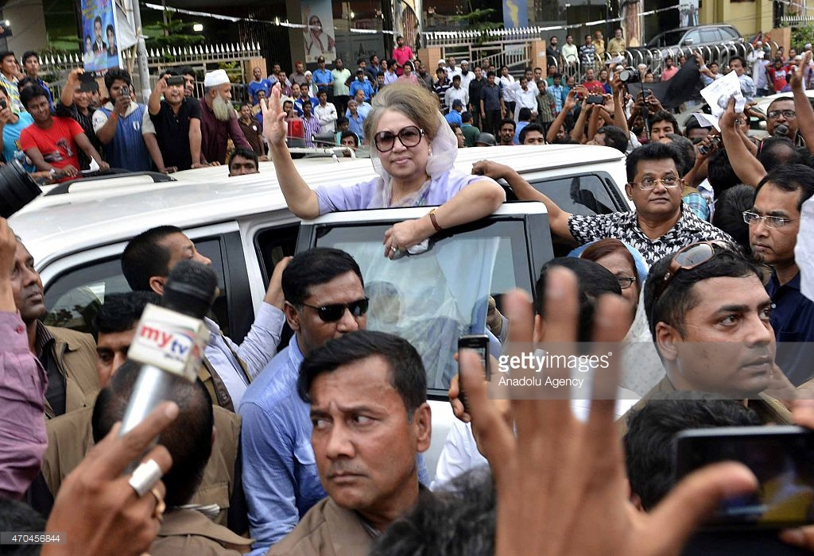

বেগম খালেদা জিয়ার গৌরবোজ্জল রাজনৈতিক জীবন

 সূচীপত্র
সূচীপত্রআমাদের সম্পর্কে
পরিকল্পনা ও বাস্তবায়ন
......ডিজাইন ও নির্মাতা.....
North South IT
বেগম খালেদা জিয়ার গৌরবোজ্জল রাজনৈতিক জীবন
পরিকল্পনা ও বাস্তবায়ন
......ডিজাইন ও নির্মাতা.....
North South IT